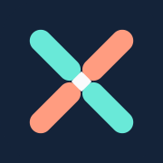
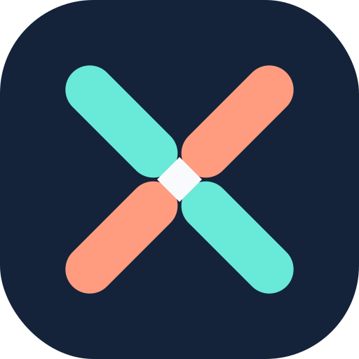

Two paths.
One considered choice.
Meet The Intersection: a bold, human-centred identity for young people who are learning not just what AI can do, but when—and whether—it should.
A symbol with a point of view.
Two coloured pathways converge at a single decision point. Neither capacity nor judgement is complete without the other.




Signal, not spectacle.
Clear semantic colours support learning. The brighter hues are for the symbol and dark surfaces; darker versions are reserved for readable text.
#142339Foundation / dark identity#F7F9FCQuiet learning surface#69E9D8Bright icon / dark backgrounds#FF9C80Bright icon / dark backgrounds#176C69Accessible labels on light#AB473BAccessible labels on light#E1F5F2Selection / learning panels#FFF0EAReflection / thinking panelsOne identity, every touchpoint.
Clear at 16 pixels and recognisable at presentation scale. Vector masters are the source; raster formats are generated automatically.


Three non-negotiables.
Brand personality should support focus, never interrupt explanations, practice or genuine creation.
Both curricula are essential. Colour identifies each pathway, but labels always carry meaning too.
The visual identity should never imply that using AI more often is automatically better learning.